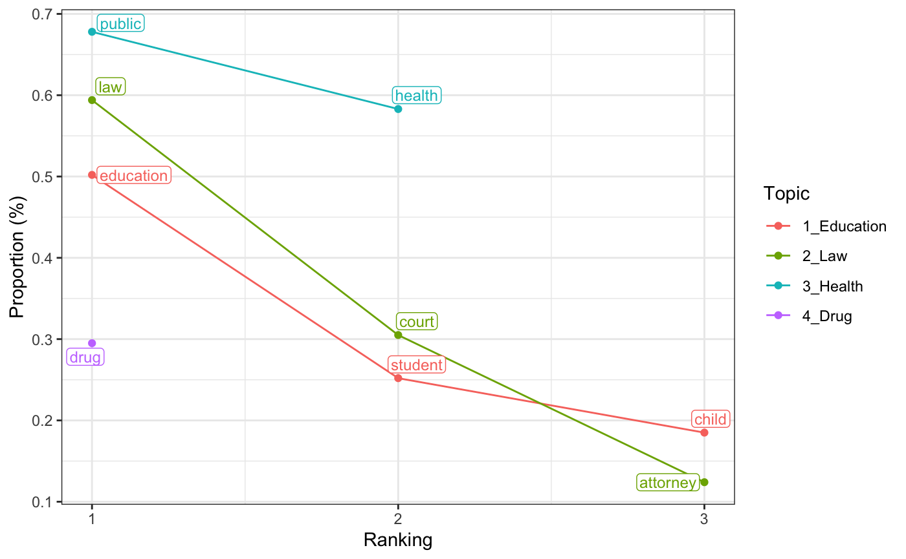

Preparation.RmdTo fit topic models with keyATM, users need to prepare texts for keyATM_read(). keyATM_read() has three ways to input texts. If you want to check an example with a built-in dataset, please proceed to the next section.
keyATM can read a dfm object created by quanteda package (this method is strongly recommended). Since keyATM does not provide preprocessing functions, we recommend users to preprocess documents with quanteda. Please visit quanteda Quick Start: Creating a Corpus to see how to create a corpus object.
By making a token object from a corpus object, quanteda can perform various preprocessing methods (quanteda Quick Start: Tokenizing texts).
Lastly, you can make a dfm object with a function dfm() in quanteda.
Here is an example preprocessing steps with quanteda. In this example, we read texts with readtext package.
library(quanteda)
library(readtext)
# Read text files
raw_docs <- readtext("PATH_TO_THE_FOLDER/*.txt",
encoding = "UTF-8")
# Preprocessing with quanteda and create a dfm object
key_corpus <- corpus(raw_docs, text_field = "text")
key_tokens <- tokens(key_corpus,
remove_numbers = TRUE,
remove_punct = TRUE,
remove_symbols = TRUE,
remove_separators = TRUE,
remove_url = TRUE) %>%
tokens_tolower() %>%
tokens_remove(stopwords("english")) %>%
tokens_select(min_nchar = 3)
key_dfm <- dfm(key_tokens) %>%
dfm_trim(min_termfreq = 5, min_docfreq = 2)
# Read texts into keyATM
keyATM_docs <- keyATM_read(key_dfm)You can also use c(stopwords("english"), "your", "stopwords") if you want to add corpus specific stopwords.
There are two other ways to read texts, which we do not recommend. Please make sure to preprocess texts with other packages or softwares. In both methods, each word should be separated by a single space.
Using data.frame or tibble: keyATM_read() can read data.frame and tibble if you preprocess texts without quanteda. Please store texts in a column named text.
> head(docs) # `docs` stores preprocessed texts
# A tibble: 6 x 1
text
<chr>
1 h.r h.r one hundred first congress congress congress united u...
2 first congress one congress congress united united state stae...
3 one one one one one one one one one one one one one one one o...
4 h.r h.r one one one hundred hundred first first congress cong...
5 congress congress one united united united united united unit...
6 h.r h.r one one one one one hundred hundred first congress co...# Read texts into keyATM
keyATM_docs <- keyATM_read(docs)Reading directly from files: If you have preprocessed text files, you can pass a list of files to keyATM_read().
# Create a list of paths to text files
textfiles <- list.files(PATH_TO_THE_FOLDER, pattern = "*.txt", full.names = TRUE)
# Read texts into keyATM
keyATM_docs <- keyATM_read(textfiles)Before fitting the model, we need to read texts and keywords into keyATM. Here we use quanteda’s dfm.
keyATM package includes a tidy dataset for illustration purpose. In this example, we use text data of the Congressional Bills scraped from congress.gov (in total 140 documents). You can load this data by data(keyATM_data_bills).
library(quanteda)
library(keyATM)
data(keyATM_data_bills)
bills_dfm <- keyATM_data_bills$doc_dfm # quanteda object
keyATM_docs <- keyATM_read(bills_dfm)Keywords should be in a list. For example, we prepare four keyword-topics. Keywrods should be stored in a list. Each element in the list is a character vector, which corresponds to a single keyword-topic. The number of keywords can vary between topics.
visualize_keywords(keyATM_docs, bills_keywords) The figure helps you to check the frequency of keywords. Including low-frequency keywords do not help the model in general. keyATM automatically prune keywords that do not appear in the documents.
Now you have texts and keywords! The next step is to fit a model keyATM(). keyATM has three models:
You can find details in FAQ.